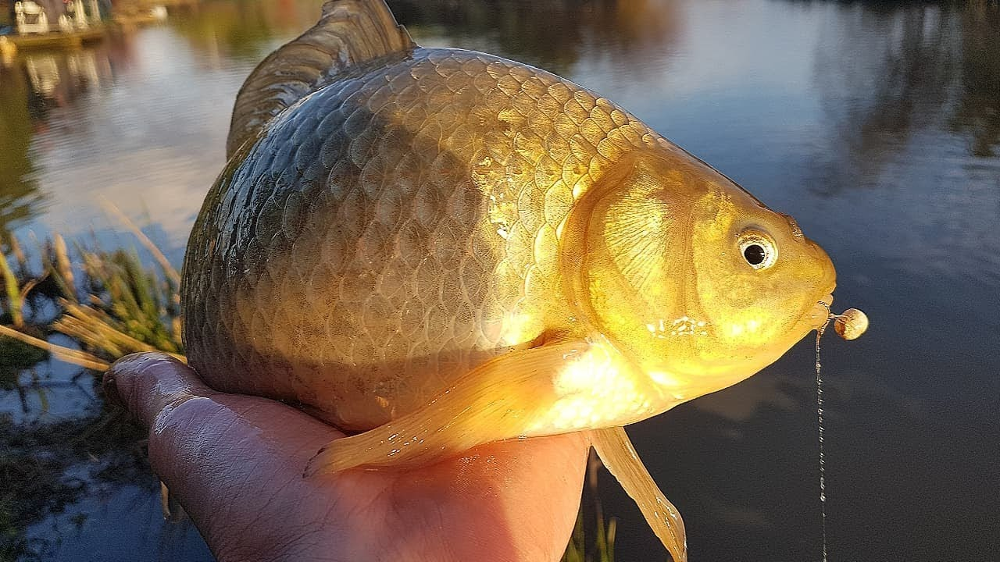
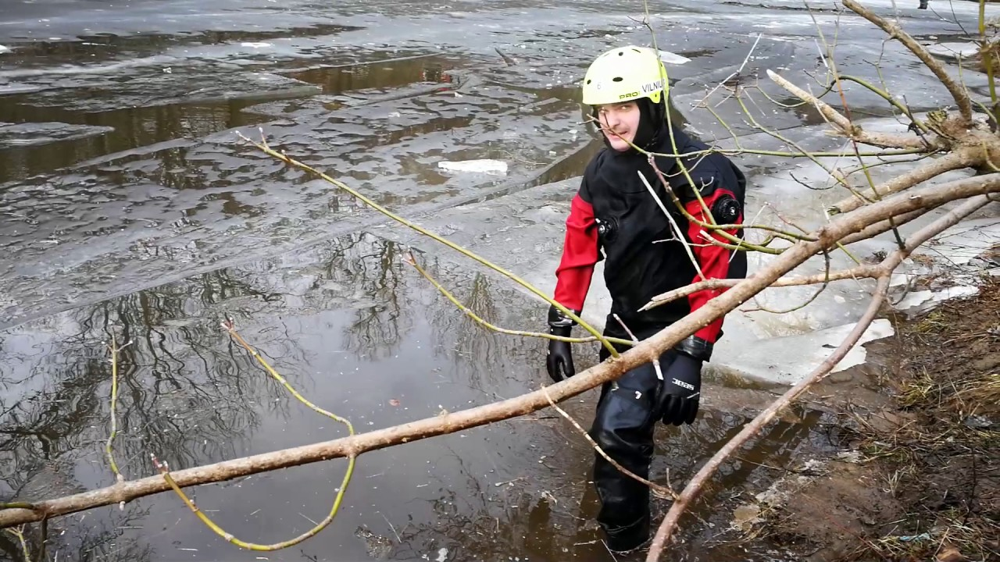

Žvejyba - Kablys.lt
 Spalio 29 d., ketvirtadienis | Vilnius 11 Kaunas 11 Klaipėda 9 Šiauliai 9 Panevėžys 10 Alytus 10 Nida 9 Raseiniai 9 Utena 11 Mažeikiai 9 Biržai 10 Kėdainiai 11 Kiti miestai Paieška | Pranešti naujieną | LT RU EN | Reklama Kontaktai | Statistika | + Apie Delfi plius Prisijungti Naujausios Skaitomiausios Lietuvoje Sportas Orai Kriminalai Užsienyje Veidai Horoskopai Gyvenimas Mokslas Verslas Daugiau Sveikata Kultūra Auto M360 Politiko akimis Jaunimas Pilietis Nuomonių ringas Multimedija Teisė Medijos Karas Propaganda PT Melo detektorius Demaskuok Ačiū už pamokas Temos | Delfi Video
Naujienos
Naujausios Skaitomiausios Lietuvoje Sportas Kriminalai Užsienyje Veidai GyvenimasVerslas Mokslas Kultūra Sveikata Auto Pilietis Miestai M360 Politiko akimis
Delfi Video
Tiesioginės transliacijos Delfi Diena Delfi Dėmesio centre LaidosNaudinga
Orai Horoskopai Receptai TV Programa Valiutų kursaiDelfi projektai
Multimedija Idėja Lietuvai Kablys Smalsūs EP Atsakingas požiūris Atgal į gyvenimąDelfi kanalai
Agro Būstas Moterys Šeima Kelionės Grynas Stilius Maistas Letena Karjera Bored Panda Sek DelfiMobilusis Delfi
kablys Žvejyba Patarimai Daiktai Apranga Aktyvūs Naujienos
Žvejyba
Pasaulinę žuvų migracijos dieną – apie upių išlaisvinimą nuo užtvankų (4)
Numatoma keisti verslinės žvejybos Kuršių mariose tvarką (3)
„Lašiša 2020“: per reidą upės buvo stebimos ir iš oro (6)
Kaip vyksta žūklė didžiausiame gėlo vandens ežere Kinijoje
Skirta parama padės pagerinti sąlygas žuvims migruoti dar dviejose šalies upėse (2)
| Populiariausi straipsniai ir videoŠalies vandens telkiniuose bus įrengta dar 17 nemokamų vietų valtims nuleisti (4)
Į šalies ežerus paleisti 25 tūkstančiai lynų (15)
Sodyboje aptiko 2 km žvejybinių tinklų (11)
Aplinkosaugininkai primena: neršiant šlakiams ir lašišoms, tikrinami ir žuvitakiai (2)
Kontrolė be sienų: Baltijos jūroje žvejojantys laivai tikrinami Lietuvoje ir Latvijoje (3)
„Lašiša 2020“: svarbiausios limituotos žvejybos sąlygos žvejams mėgėjams (5)
Rugpjūtį į aplinkosaugininkus dažniausiai kreiptasi dėl žvejybos pažeidimų
Sterlių ženklinimui pritaikyta nauja metodika (1)
Dėmesys žvejybos kontrolei ir žuvų iškrovimams Baltijos jūroje (9)
Bandymas slėpti įkalčius brakonieriui nepadėjo (6)
Siūloma uždrausti žvejoti lašišas dar dvejose Nemuno atkarpose (17)
Siūloma didinti padarytos žalos žuvų ištekliams apskaičiavimo įkainius (10)
Siūloma nustatyti prievolę per verslinę žvejybą naudoti telemetrinę stebėjimo įrangą (16)
Lietuvos ežerai gausiai įžuvinti šamų jaunikliais (38) 204
Bražuolė bus pirmoji iš užtvankos gniaužtų išlaisvinta šalies upė (37) 222
Brakonieriai savaitę praleido nuostolingai (1)
Už žvejybą tinklais nubaustas Bulgarijos pilietis (10)
Nesėkminga brakonierių naktis: tūkstantinės baudos ir prarastas automobilis (14) 131
Naktį prie tinklų miegančio brakonieriaus „poilsį“ saugojo pareigūnai (11) 260
Žuvų atėję brakonieriai pateko tiesiai į aplinkosaugininkų pasalą (3) 403
Brakonierių tinkluose – Žuvininkystės tarnybos valtis su varikliu (9) 157
Utenos ir Zarasų rajonų vandens telkiniai praturtinti ežeriniais sykais (3) 117
Lietuvos vandens telkiniai gausiai įžuvinti lydekomis (21) 439
Pareigūnų „laimikis“ – daugiau negu du kilometrai nelegalių tinklų (3) 123
Ežerinė rainė Lietuvoje. Ar sugebėsime išsaugoti vieną rečiausių Europos gėlavandenių žuvų rūšių? (13)
Sulaikyti asmenys, sugavę 101 karšį (23) 176
Žvejo mėgėjo atmintinėje – svarbiausia žinotina informacija (30) 264
Aktualiausi verslinės žvejybos apribojimai ir draudimai Baltijos jūros priekrantėje (10)
Suintensyvėjo žvejybos kontrolė Baltijos jūroje (8)
Upėtakių žvejyba brakonieriams kainavo per 3000 eurų (3) 159
Marius Jonys. Kaip sudominti karpį dar neįšilus vandeniui ir kokias populiariausias klaidas daro meškeriotojai (5) 222
Staigus atšalimas ir lydekų „atgulimai“: kaip sudominti aštriadantę pasikeitus orams (10) 273
Pasidalino informacija, kur Baltijos jūroje šiuo metu negalima vykdyti verslinės žvejybos (3)
Pavasarį paskui žiobrius Minijoje (2)
Savaitgalio aktualijos žvejams. Šamų invazija Neryje, žiobrių keistenybės Šiaurės Lietuvoje (8)
Žuvininkystės tarnybą sėkmingai pasiekė stiklinės stadijos unguriai (3)
Ministrai keičiasi, intrigos – ne. Šilavoto karpių detektyvas tęsiasi (12)
Per dvi dienas Šiaulių aplinkosaugininkai patikrino per 60 žvejų (3) 174
Savaitgalio aktualijos žvejams: „sunkios“ lydekos, pikti Neries žiobriai (2) 390
Kaip pagauti krokodilą iškart po draudimo arba iškylančios „malkos“ efektas (1)
Ričardas Jankevičius: žuviai vienodai, koks kotas stovi krante – už 20 ar 400 eurų 665
Tarp konfiskuotų įrankių – 160 metrų statomųjų tinklų (2)
Prasidėjo akcija „Ungurys“ – stabdys neteisėtą ungurių žvejybą (9) 324
Lydekų sezono pradžia. Ką prognozuoja ir pataria autoritetai? (3)
Lietuvoje aptiko retą susirgimą: užsikrečiama valgant netinkamai paruoštą žuvį (3)
1 2 3 4 5 Sekite DELFI REKLAMA KONTAKTAI PRIVATUMAS KARJERA en.delfi.lt ru.delfi.lt pl.delfi.lt delfi.ee rus.delfi.ee delfi.lv ru.delfi.lv UAB DELFI Gynėjų g. 16, 01109 Vilnius +37052045400 info@delfi.lt © 1999-2020 DELFI. Visos teisės saugomos .